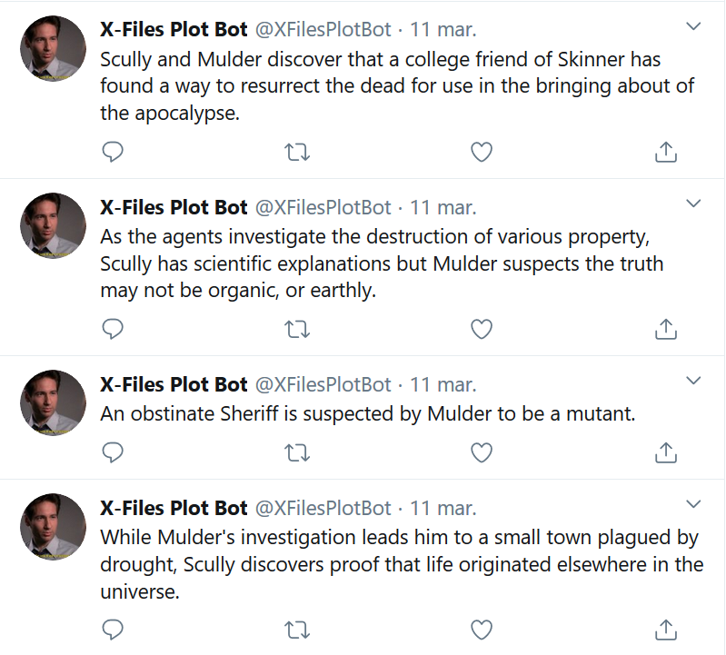

Twitter Bots
We ran several tutorials on using Tracery and Cheap Bots Done Quick to create bots that post generative text or images on Twitter. Some of the bots made by CS Club members include Unicode Faces, X-Files Plot Bot, and Cat Pic Bot.
